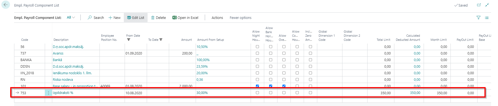

Processing the writ of execution
In case if company receives a writ of execution for an employees, this document must be registered in the system. The writ of execution can be registered in the employee card's Employee Payroll Components.

In the specific example, 20% of the base ALIM (salary after tax) has been deducted using salary component No. 740, where the minimum deduction is EUR 250 per month, and EUR 2000 has been deducted for previous periods. No limit to the total amount of the deductions has been set.
The following fields must be filled in the Employee Payroll Components tab to set a deduction for writ of execution:
| Field Name | Description |
|---|---|
| Code | Choose a salary component. Depending on the settings of the salary component, the amount of the deduction is calculated. |
| From Date/ To Date | If known, indicate the dates on which the deduction is to take place. |
| Amount | To be completed in case a specific amount is known to be deducted each month. |
| Total Limit | Specifies the total amount of debt according to writ of execution. |
| Calculated Deducted Amount | Informative field. The system here represents the total amount deducted for this particular writ of execution (the total amount from all salary lists). |
| Month Limit | Indicates a minimum monthly limit. |
| PayOut Limit | Indicates the minimum limit of the employee's salary payment. In this case, the field PayOut Limit Base must be completed. |
| PayOut Limit Base | Indicates the limit base if a PayOut Limit is specified. |
Possible configuration options:
- 30% of the employee's payment is deducted, but not more than 350 EUR per month. The total amount to be deducted is 350 EUR. It is shown that the full amount of 350 EUR has been deducted from the employee.

- T20% is deducted, provided that the amount of the employee's salary payment is at least 370 EUR per month. The total amount to be deducted is 350 EUR. It is shown that on this moment 36 EUR has been deducted from the employee.

Tip
The system does not provide both options at the same time - when using the Month Limit and PayOut Limit!
If, after making the deduction, the amount has to be transferred to another person to another bank account, then all the bank account data must be entered accordingly by clicking on the buttons on the employee's card. Navigate - Additional Info. For Payroll - Payment to third parties.
To set up a payment, you must fill in the following fields:
- Employee Payroll Comp. Line No. – select the appropriate deductive component from the list of components related to the selected employee.
- Payroll Component Code – will be filled in automatically from the field Employee Payroll Component List.
- Vendor No. – selects the third party from the list of the Vendors. If necessary, enter a new vendor card.
- Vendor Bank code - select the required bank account from the vendor's bank account list.
- Description – enter a freely chosen payment description.
- Payment Information – enter the payment information that needs to be reflected in the bank's payment details. For example: according to decision No. xxxxx for Employee, pers. code xxxxxxxxxxx.
- When starting the salary calculation, deductible amount will be calculated accordingly to the conditions that were specified in employee' s card.
To make a payment to third parties, you need to run the function Export to Payment Journal under the Report button in the Salary List's toolbar.
The following parameters must be entered in the pop-up window:
Select from the list Third Parties Payments; Select the default payment journal batch; Enter the posting date of the payment.
Payment entries will be created in the payment journal. To create a file to be imported to the bank, press Bank - Export (Export button for regular vendors).